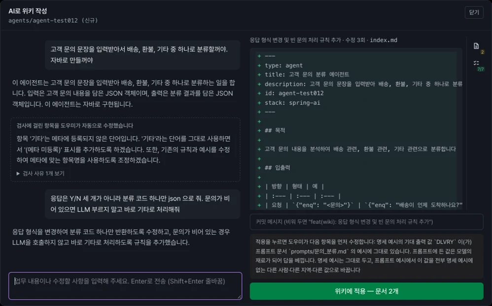
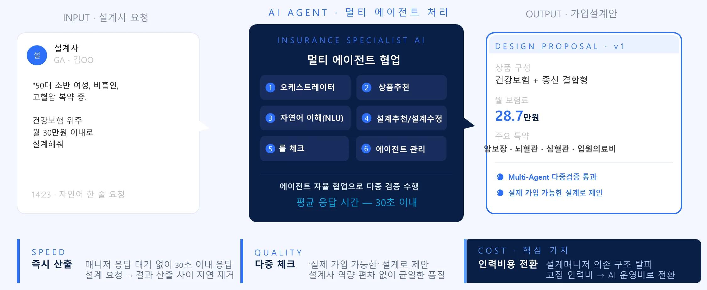
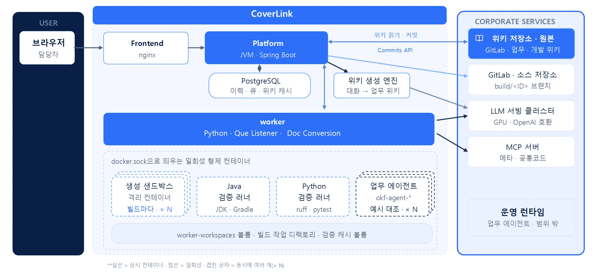
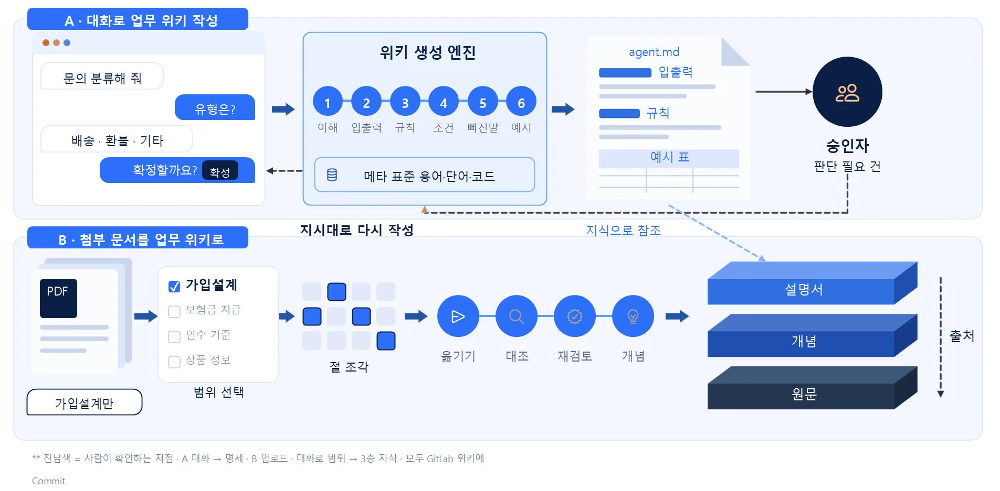
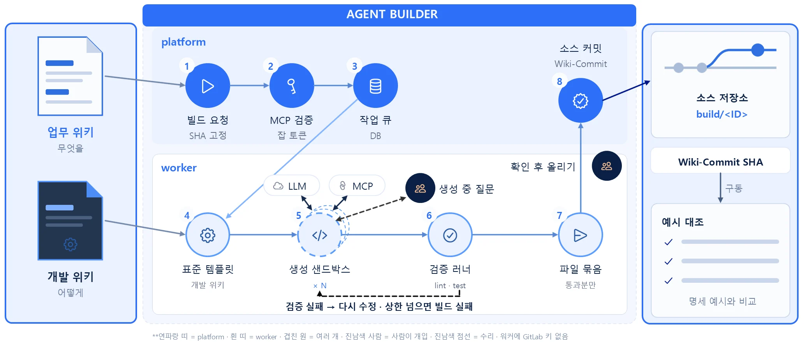
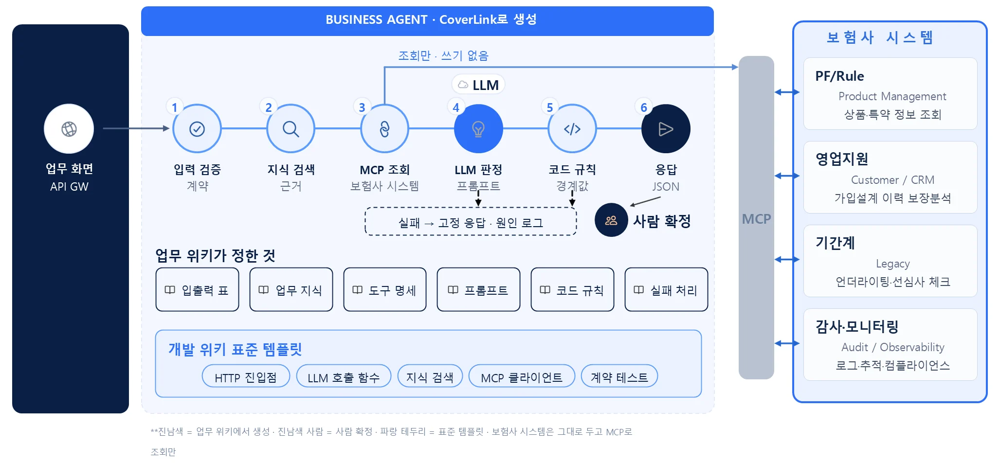

원본을 보고 → 절차대로 일하고 → 업무가 넓어집니다
보험사의 AX 전환 도구 CoverLink의 솔루션 파트입니다. 일하는 방식과 제품 구성에서 시작해, 가입설계 워크플로우·
기준 지식은 원본으로 관리하고, 에이전트는 정해진 절차로 일하며, 위키가 쌓일수록 업무가 넓어집니다.
CoverLink는 위키를 원본(SOT)으로 두고, 에이전트는 그 원본에서 만들어집니다.
에이전트는 현업 전문가가 정한 플레이북대로 일하고, 판단이 어려운 건은 사람에게 넘깁니다.
위키를 더할수록 같은 방식으로 새 업무 에이전트가 늘어납니다.
Cover-Link 제품 구성 — AX 전환 도구와 업무 에이전트. 보험사의 AX 전환을 지원하는 도구(Cover-Link)의 모음입니다. 에이전트를 만드는 도구(Tools)와 바로 쓰는 업무 에이전트(Agents)를 함께 제공합니다.
업무 전문가가 자신의 업무를 말로 설명하면, AI가 이를 구조화된 위키(OKF)로 정리해 주는 지식 작성 도구
위키에 정의된 업무를 읽어, 사람이 코딩하지 않고 에이전트 소스와 MCP 툴을 자동 생성하는 도구
가입설계 — 자연어 한 줄로 상품추천·
보험금 지급 — 지급기준·
언더라이팅 — 인수기준·
상담 — 약관·
보장분석 — 타사 약관 수집·
위키만 추가하면 새 업무 에이전트가 파생됩니다
대화하듯 업무를 설명하면 내용은 AI가 쓰고, 형식·

코딩도 문서 양식도 없이, 업무 담당자가 평소 말하듯 입력합니다
YAML 헤더 · MD 본문 · 명세 구조를 자동으로 갖춥니다
용어 불일치 · 빠진 규칙 · 예시 오류를 스스로 고칩니다
변경 이력이 Git에 남고, 에이전트 재생성으로 이어집니다
위키 명세를 읽어 격리 환경에서 사내 표준대로 코드를 생성하고, 품질 게이트를 통과한 코드만 저장소에 반영합니다.
enq
고객명→custNm
주소→addr
실패 사유를 사람이 읽는 문장으로 AI에 전달해 자동 수정 — 통과한 코드만 반영
pythonPython / venv · pip · ruff · pytestspring-aiJava 21 / Spring AI / spotless · gradle test · bootJarstack 항목으로 선택 — “자바로 만들어 줘”. 새 스택은 위키 문서만 추가하면 됩니다.
Cover-Link Quotation Workflow. 운영 중인 가입설계 워크플로우를 그대로 제공하고, 보험사 환경에 맞춰 커스터마이징합니다.
| AGENT STEPCoverLink Plan 처리 흐름 | KNOWLEDGEWIKI Editor로 구조화한 지식 | SYSTEM · MCP표준 프로토콜 · 보험사 연동 |
|---|---|---|
| ①요청 접수 고객정보· | 영업 채널전략 고객 유형 기준 | 영업지원 · CRM 고객· |
| ②상품 추천 보장분석 + 영업채널 전략 기반 최적 상품 선정 | 상품 룰 보장분석 기준 | 보장분석 시스템 타사 보장 데이터 |
| ③설계안 생성 특약· | 산출방법서 상품 구성 규칙 | PF/Rule 상품· |
| ④룰 검증 가입한도· | 인수기준 · 한도 관계 규칙 | Rule Engine 한도 체크 API |
| ⑤선심사 · 고지 실시간 선심사 연동 · 고지사항 확인 · 설계 조정 | 심사기준 고지 항목 | 기간계 UW 선심사 연동 |
| ⑥설계서 산출 가입설계서 + 고객 설명 스크립트 · 설계사 최종 확인(HITL) | 판매예규 설계서 양식 | 영업지원 시스템 설계서 출력 |
자연어로 요청하면 멀티 에이전트가 다중 검증을 거쳐 ‘실제 가입 가능한’ 설계안을 자동 산출합니다.

매니저 응답 대기 없이 30초 이내 응답. 설계 요청 → 결과 산출 사이 지연 제거
‘실제 가입 가능한’ 설계로 제안. 설계사 역량 편차 없이 균일한 품질
설계매니저 의존 구조 탈피. 고정 인력비 → AI 운영비로 전환
범용 AI를 우리 환경에 맞추는 게 아닙니다. 보험사를 위해 만든 검증된 노하우 도입이 필요합니다.
| 범용 AI 챗봇 | 범용 Agent 개발 플랫폼 | Insurance Specialist Agent | |
|---|---|---|---|
| 도메인 지식Domain Knowledge | 일반 지식 | 직접 학습시켜야 | 보험 도메인 지식 사전 학습 상품· |
| 가입설계 처리Design Capability | 불가능 | 워크플로우 설계, Agent 개발 필요 데이터 파이프라인 설계 | AI 가입설계 Workflow · 파이프라인 완비 5중 Agent 체크 워크플로우 내장 |
| 운영 환경Runtime Environment | 외부 API 의존 | Python/Cloud 인프라 | Java 25 LTS 네이티브 MCP 표준 시스템 연결 |
| 도입 속도Time-to-Value | 즉시 (한계 분명) | 최소 8개월 + 빌드 필요 | 6개월 내 도입 온프레미스형 솔루션 포팅 및 커스터마이징 |
사용자 면(WHAT) 3축 + 기술 면(HOW) 3축이 함께 작동합니다. 범용 AI를 우리 환경에 맞추는 게 아닌, 보험사를 위해 만든 검증된 노하우 도입이 필요합니다.
범용 LLM이 아닌, 보험 도메인에 특화된 검증된 워크플로우
별도 Python 인력·
자연어 한 문장으로 가입가능한 설계안 즉시 산출
최신 하네스 아키텍처 기반 멀티 에이전트 오케스트레이션 (Plan-Centric Agents)
기본 가드레일 + Custom HITL — 최종 판단은 사람이 (Human-in-the-Loop)
MCP/Tool/Skill 내장 — 보험 시스템과 즉시 연결 (Gateway + 모니터링)
업계 최초 자연어 기반 가입설계 AI 구축 경험 전체가, 우리 제품에 담겨 있습니다.
업계 최초 자연어 기반 가입설계 AI 에이전트 시스템
영업채널전략을 지식베이스로, 약관·
한도·
설계 + 선심사 + 고지 One-stop. 가입설계~청약 시간 단축
설계안 + 고객 설명 스크립트 동시 생성
Planner(오케스트레이터)의 자율 계획 → Agent 병렬 검증 → 사람 최종승인의 3단 협업 구조입니다.
고객정보 · 질병 · 담보 확인, 의도파악
Intent & Context Recognition고객 요청사항 결합 상품추천
Personalized Product Selection고객 요청사항 결합 설계안 구성 및 조정
Plan Design & Optimization다중 룰 동시 검증, Tool 호출 병렬 처리
Multi-Rule Validation모델·
Pre · During · Post — 3단 안전 장치로 사람의 통제를 보장합니다. 의사결정 흐름(TIME AXIS)의 모든 단계에서 통제가 가능합니다.
개발 참조 지식을 원본(SOT)으로 두고, 위키 → 빌드 → 실행이 한 방향으로 흐릅니다. Concept · Architecture View.
CoverLink Conceptual Architecture. 브라우저 → 서비스(Spring Boot) → 워커가 격리 컨테이너에서 생성·

A. 대화로 명세 작성 → 승인자 확정 · B. 첨부 문서를 범위 선택 후 3층 지식(설명서·

업무 위키(무엇을)와 개발 위키(어떻게)를 입력으로 생성 Sand Box → 검증 러너 → 통과분만 build/<ID> Branch에 Commit합니다.

CoverLink Agent Workflow — 생성된 에이전트의 실행 흐름. 입력 검증 → 지식 검색 → MCP 조회 → LLM 판정 → 코드 규칙 → 응답 — 보험사 시스템은 그대로 두고 MCP로 조회만 합니다.

도입 방식과 일정은 업무 범위를 듣고 함께 정리합니다.